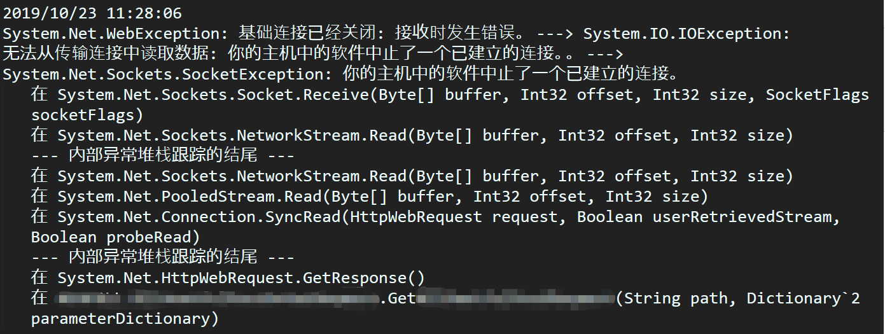
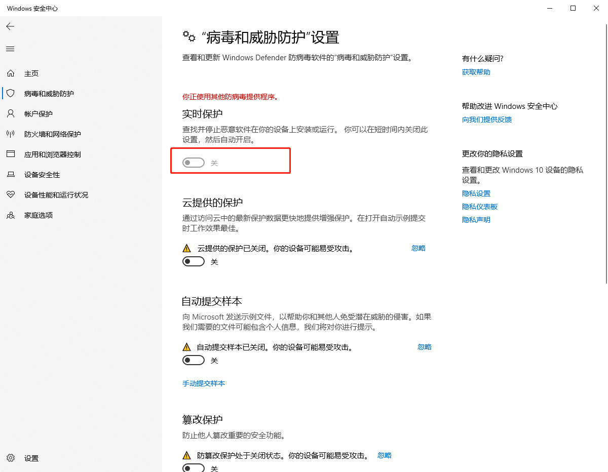

描述：某次更新程序，需要给测试员MM测试，之前都是正常的，更新后给MM测试就报异常System.Net.WebException 基础连接已经关闭：接收时发生错误 -------> System.IO.IOException：
无法从传输连接中读取数据：你的主机中的软件中止了一个已建立的连接。
排查第一步：首先用自己的电脑测试，发现没有问题；但是在测试员MM的电脑上就有问题，于是问题定位可能出现在MM电脑环境本身上。
排查第二步：因为程序有记录了错误日志，于是打开MM电脑的日志查看，错误堆栈如下：

排查第三步： 各种搜索引擎查找资料，尝试过将httpWebRequest的KeepAlive属性设置为false，并且同时设置 System.Net.ServicePointManager.Expect100Continue = false;编译更新后重新测试依然还是有同样的错误。
至此，实在没有办法，因MM电脑是笔记本，使用的是Wifi，且自己的电脑是台式机使用有线网络，于是猜测是由于问题出在Wifi上（后来事实证明，这种猜测是不对的），于是请网络维护人员检查网络，得到的回复是“网络本身没有问题”。
于是陷入了沉思当中，后来再试时无意中发现有右下角有一个“盾牌”的图标（Win10的Windows Defender），关闭实时防护就解决了问题。
以上只是某种特殊的处理方式，相同的异常并非所有的情况都是相同的处理方式，具体问题需要具体分析，也希望能帮助到遇到同样问题是同样原因导致的人。
